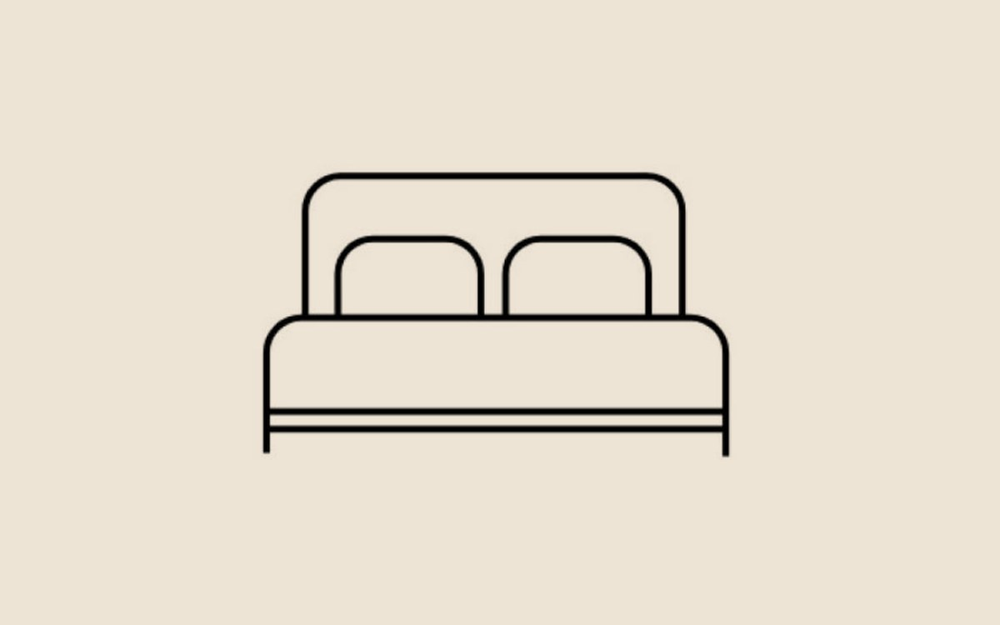

Cambio de aceite
Reemplazo del aceite del motor según lo que indica el fabricante de tu vehículo.
ConsultarBLACK · Río Cuarto
Además de la tienda, atendemos tu vehículo en el local de Río Cuarto. Consultanos por el servicio que necesitás.
Reemplazo del aceite del motor según lo que indica el fabricante de tu vehículo.
ConsultarFiltros de aceite, aire y combustible para que el motor rinda como corresponde.
ConsultarLubricación de los puntos del vehículo que lo necesitan para evitar desgaste.
ConsultarRevisión y mantenimiento periódico para llegar al próximo kilómetro sin sorpresas.
ConsultarControles y tareas de mantenimiento habituales para el uso diario.
Consultar
Te esperamos en Río Cuarto. Traé tu vehículo o escribinos antes y coordinamos.
¿Querés llevar tu propio aceite o filtros? Podés comprarlos en la tienda y retirarlos en el local.
Ver lubricantes